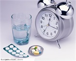

请输入药品化学名
我们致力于为患者提供更加全面权威的用药不良反应发生率研究
药品不良反应一般可分为副作用、毒性反应、过敏反应和继发感染(也称二重感染)四大类。不良反应有大小和强弱的差异，它可以使人感到不适、使病情恶化、引发新的疾病，甚至置人于死地。如何最大限度地发挥药物的疗效，最大限度地减少不良反应，这是临床需解决的关键问题。
不良反应发生
只要合理使用药物，就能避免或使其危害降低到最低限度。这就要求人们在用药前全面地了解该药的药理性质，严格掌握药品的适应症，选用适当的剂量和疗程，明确药品的禁忌。在用药过程中还应密切观察病情的变化，及时发现药品产生的不良反应，加以处理，尽量避免引起不良的后果。
药品的种类
只要合理使用药物，就能避免或使其危害降低到最低限度。这就要求人们在用药前全面地了解该药的药理性质，严格掌握药品的适应症，选用适当的剂量和疗程，明确药品的禁忌。在用药过程中还应密切观察病情的变化，及时发现药品产生的不良反应，加以处理，尽量避免引起不良的后果。
个人体质与不良反应
只要合理使用药物，就能避免或使其危害降低到最低限度。这就要求人们在用药前全面地了解该药的药理性质，严格掌握药品的适应症，选用适当的剂量和疗程，明确药品的禁忌。在用药过程中还应密切观察病情的变化，及时发现药品产生的不良反应，加以处理，尽量避免引起不良的后果。
药品不良反应一般可分为副作用、毒性反应、过敏反应和继发感染(也称二重感染)四大类。不良反应有大小和强弱的差异，它可以使人感到不适、使病情恶化、引发新的疾病，甚至置人于死地。如何最大限度地发挥药物的疗效，最大限度地减少不良反应，这是临床需解决的关键问题。
药品不良反应一般可分为副作用、毒性反应、过敏反应和继发感染(也称二重感染)四大类。不良反应有大小和强弱的差异，它可以使人感到不适、使病情恶化、引发新的疾病，甚至置人于死地。如何最大限度地发挥药物的疗效，最大限度地减少不良反应，这是临床需解决的关键问题。。
未来的研究方向
药品不良反应一般可分为副作用、毒性反应、过敏反应和继发感染(也称二重感染)四大类。不良反应有大小和强弱的差异，它可以使人感到不适、使病情恶化、引发新的疾病，甚至置人于死地。如何最大限度地发挥药物的疗效，最大限度地减少不良反应，这是临床需解决的关键问题。
药品不良反应一般可分为副作用、毒性反应、过敏反应和继发感染(也称二重感染)四大类。不良反应有大小和强弱的差异，它可以使人感到不适、使病情恶化、引发新的疾病，甚至置人于死地。如何最大限度地发挥药物的疗效，最大限度地减少不良反应，这是临床需解决的关键问题。
药品不良反应一般可分为副作用、毒性反应、过敏反应和继发感染(也称二重感染)四大类。不良反应有大小和强弱的差异，它可以使人感到不适、使病情恶化、引发新的疾病，甚至置人于死地。如何最大限度地发挥药物的疗效，最大限度地减少不良反应，这是临床需解决的关键问题。